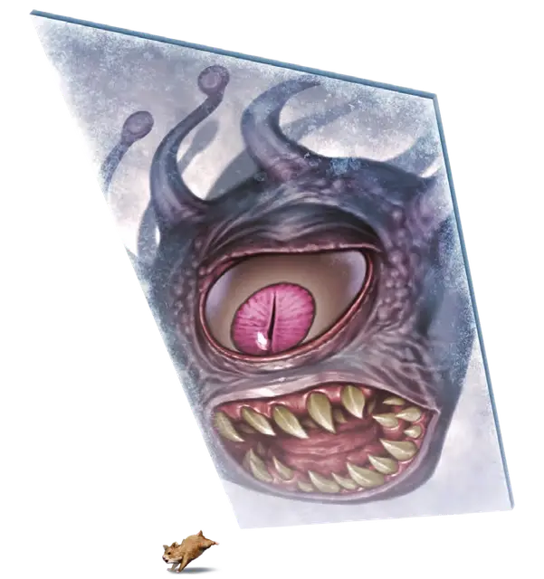

Фрактин
Fractine
Большой Конструкт, нейтральный

Класс Доспеха 14 (природный доспех)
Хиты 110 (13к10 + 39)
Скорость 0 футов, летая 60 футов (парит)
| мод | спас | ||
|---|---|---|---|
| СИЛ | 1 | −5 | −5 |
| ЛОВ | 13 | +1 | +1 |
| ТЕЛ | 16 | +3 | +3 |
| мод | спас | ||
|---|---|---|---|
| ИНТ | 18 | +4 | +4 |
| МДР | 18 | +4 | +4 |
| ХАР | 11 | +0 | +0 |
Навыки Восприятие +8
Иммунитет к состояниям глухота, захват, испуг, истощение, окаменение, опутанность, ослепление, отравление, очарование, ошеломление, паралич, сбивание с ног
Чувства слепое зрение 360 футов (слеп за его пределами), пассивное Восприятие 18
Опасность 9 (5000 опыта)
Бонус мастерства +4
Особенности
Сопротивление магии. Фрактин совершает с преимуществом спасброски от заклинаний и прочих магических эффектов.
Наблюдательная фокусировка. Заклинатель может использовать фрактина в качестве фокусировки при накладывании заклинания наблюдение [scrying] и схожей магии при условии, что заклинатель и фрактин находятся в пределах 5 футов друг от друга.
Двумерность. Фрактин может занимать пространство другого существа и наоборот. Он может перемещаться сквозь другие существ и объекты, как если бы они были труднопроходимой местностью, но получает 5 (1к10) урона силовым полем если заканчивает свой ход внутри объекта.
Необычная природа. Фрактин не нуждается в воздухе, питье и сне.
Действия
Межпространственное прикосновение. . Рукопашная атака заклинанием: +5 к попаданию, досягаемость 5 фт., одна цель. Попадание: 24 (8к6) урона силовым полем
Бонусные действия
Заточение. Фрактин нацеливается на одно существо своего размера или меньше. Цель должна преуспеть в спасброске Ловкости Сл 16, иначе будет заточена в демиплан. Пока существо находится в заточении, на двухмерной поверхности фрактина можно увидеть его искаженное изображение.
Демиплан перемещается вместе с фрактином. У него неразрушаемые и непроницаемые границы, и он достаточно большой, чтобы вместить цель. В заточении существо не страдает от голода или жажды. Ни одно другое существо не может войти в демиплан, а фрактину невозможно причинить вред изнутри демиплана.
Фрактин может держать в заточении лишь одно существо и освободить его бонусным действием. Если хиты фрактина уменьшаются до 0, любое существо мгновенно высвобождается из его демиплана. Существо появляется в свободном пространстве как можно ближе к фрактину (или к тому месту, где тот погиб). Существо может покинуть демиплан самостоятельно с помощью магии, позволяющей перемещаться по планам. Например, с помощью заклинания уход в иной мир [plane shift].
Реакции
Отражённый урон. В ответ на полученный урон от существа, которое он может видеть в пределах 120 футов, фрактин заставляет это существо совершить спасбросок Телосложения Сл 16. Существо получает 24 (8к6) урона силовым полем при провале или половину этого урона при успехе.
Разделение. Когда у фрактина Большого размера остаётся как минимум 10 хитов, и он получает дробящий, колющий, рубящий или урон звуком из любого источника, он разделяется на два фрактина Среднего размера. Новые фрактины занимают место, ранее занимаемое исходным существом. У каждого нового фрактина количество хитов равно половине хитов исходного существа, округлённых в меньшую сторону. Если внутри демиплана первоначального фрактина было заточено существо, оно высвобождается в момент его разделения, появляясь в свободном пространстве как можно ближе к новым фрактинам.
Описание
«Я столкнулась с существом, непохожим ни на что другое в мультивселенной: мерцающее зеркало, кувыркающееся в Астральном море в неизвестном направлении, с искажённым отражением бехолдера на его поверхности. Вначале, я опасалась, что это какой-то вид корабля. Затем я осознала, что бехолдер был заключён внутри предмета.
С приближением мерцающего зеркала мой страх рос. Лишит ли оно и меня свободы? К счастью, этого не произошло. Когда он завис рядом со мной, я почувствовала любопытное покалывание. Я попыталась дотронуться до него, но зеркало немного отстранилось, будто опасаясь, что ему или мне может быть причинен какой-то вред. Я помню, как наложила пару заклинаний, надеясь пообщаться с этим существом. Через несколько секунд оно перестало мерцать и улетело прочь. Я думаю, что оно питается магической энергией.
Это существо пробудило во мне любопытство. Я должна узнать больше. Так что вперёд! В Стархолд!»
- Эмилу Харизматичный, колдунья и наследница Акамара
Фрактин — это причудливое двухмерное существо, летающее по Дикому космосу и Астральному морю, сгибаясь и разгибаясь, подобно листу оригами.
Когда оно сталкивается с другим существом, то становится похоже на плоское трапециевидное зеркало высотой от 9 до 13 футов.
Исследователи астрала, сталкивающиеся с фрактинами, утверждают, что эти существа разумны и часто позволяют использовать себя в качестве магических кристаллов: их отражающие поверхности становятся зеркалом, необходимым для наложения некоторых заклинаний школы Прорицания. Таким образом фрактин вытягивает магическую энергию из заклинателя. Этого недостаточно, чтобы причинить ему вред, но достаточно, чтобы заклинатель обратил на это внимание.
Для продолжения своего существования фрактин нуждается в свете и магической энергии. Он способен черпать энергию из ближайшего источника света, заклинателя, магического предмета или магического эффекта, не причиняя им никакого вреда. Когда фрактин не поглощает свет или магическую энергию в течение десяти дней, он начинает мерцать. Спустя день он складывается сам по себе и самоуничтожается, не оставив и следа.
Разрушение фрактина сопровождается громким звуком, напоминающим звон бьющегося стекла.
Фрактин атакует, налетая на свои цели, и нанося урон при прохождении сквозь них. Также фрактин может заточить существо внутри демиплана его двухмерной формы. Искажённое отражение пленника можно увидеть на зеркальной поверхности фрактина.
Дробящий, колющий, рубящий и урон звуком, полученный фрактином, может привести к тому, что он распадётся на два меньших. Каждый из них автономен и способен заточить внутри себя существо. Когда фрактин умирает, он складывается сам по себе и исчезает, освобождая любое заточённое внутри существо.